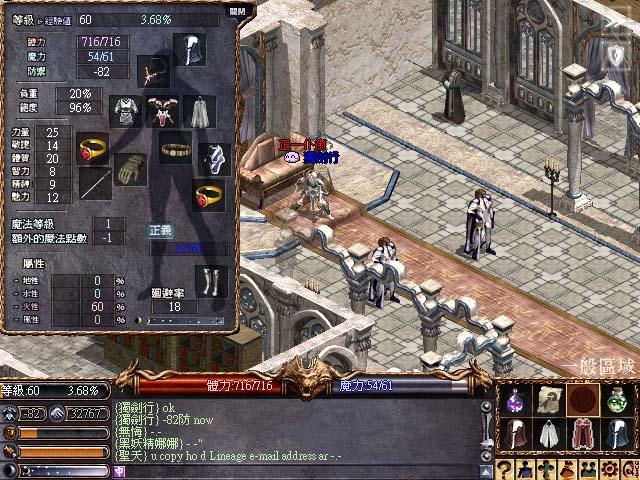
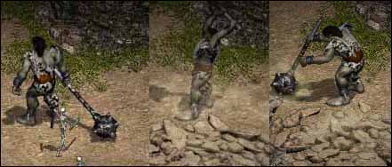
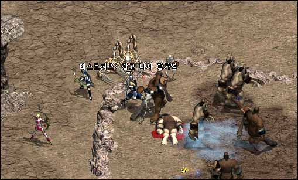

2003年1月4日 第十二章特色改變來源：韓國天堂官方網站
英文翻譯：Lineage Compendium 亞丁城攻城戰
亞丁城攻城戰與普通的不同，勝利條件為殺死原先控制城堡的王族，或控制中央的守護塔。前往中央的守護塔的通道受到魔法牆的保護，要進入就必須先破壞城堡四角的守護塔（它們應該是四元素守護塔）。 另外，稅制系統亦會有改變，現在所有稅款將會直接給予亞丁城，而亞丁城會將稅款分給各城鎮。（各城鎮會有一定份量的稅款，而亞丁城可以再給予他們更多的稅款。） 這樣會創造一個全新及有趣的亞丁國王職務，他要平衡收入與支出，同時要令各城鎮都有合理的收入，否則他們可以會造反。 聯盟系統
血盟可以和其他血盟組成聯盟，每個聯盟都有一個中央血盟及最高領導王族，聯盟的成員數目不能超過最高領導者血盟成員數目的四倍。（即是說假如領導者血盟的成員有40人，那麼聯盟的成員總數上限為160人） 同時，聯盟系統亦會加入聯盟頻道，聯盟頻道分為兩級，普通級和高級，領導者可以就實際需要而將某些人設為高級，只有高級者可能使用聯盟頻道。 故鄉/原居民系統
我們曾經提及過玩家可以給予一定的費用去成為某個城鎮的居民，當中貢獻最多者可以在一定時期內成為該城鎮的市長。另外在使用回家卷時亦會回到自己已登記的城鎮。 像目前一樣，城堡的控制者可以設定當地的稅率，不過市長有權可以再減少稅率，例如城堡控制者將稅率設為15%，市長可以將稅率減少至10%（10%是下限）。假如當地的稅率低，收入亦會較少，而亞丁城的控制者可能會給予他們較少的稅款，這將會創造一個全新的經濟系統。 另外，所有城鎮的居民亦會分到部分的稅款，當然所分到的是非常少的。我們不太確定所分到的是控制者給予城鎮的，還是在扣除城堡收入後的份量。 結婚系統
不同性別的玩家可以給予教堂一些費用去舉行婚禮，這裡將會有等級限制（兩人等級之和），因此低等級玩家不能結婚。他們亦可以給予教堂一些費用去辦離婚手續。 結婚後有什麼好處呢？假如一對伴侶在同一個畫面內打怪，他們的能力將會提高。暫時仍未有詳細的資料，官方只說能力會加強。 交易系統
就像美國的LOA伺服器，各城鎮將會有特別的道具出售，等級低的城鎮不會賣高等級的道具，反之亦然。 同時，地區道具（特產）亦會加入。地區道具在本身的城鎮價值不會很高，但在其他城鎮出售的話可能會賺到利潤，假如你不想打怪賺錢，你可以做送貨商人呢！ 當然，這裡會有一些限制：雖然那些道具可以疊在一起（以數字顯示數量），但它們是非常重的，假如你死亡或使用傳送術，那些道具便會掉在地上。在運貨途中你不能變身、使用隱斗，加速術，綠水，勇水或精餅，即是說你必須以正常狀態行走的方法，腳踏實地穿梭不同的城鎮去做交易。
香港首名60級騎士誕生了！  香港首名60級騎士誕生了，他就是經常在火谷出現的獨劍行了！究竟他所使用的裝備如何呢？大家不妨猜猜看。相信他在64級前會將點數全部加在敏捷上，屆時他最少會有-88防！
傲慢塔二至七樓怪物簡介 原文：Jude1004.com (2) (3) (4) (5) (6)
英文翻譯：Lineage Compendium 夢魔(Nightmare)：行走速度非常快，攻擊速度非常慢，不是十分強，在5-7樓出現。
魅杜莎(Medusa，蛇髮女怪)：行走速度慢，攻擊速度慢，會使用木咒，木咒等待生效時間長而僵硬時間短，可以看穿變身及隱身，在在5-7樓出現。
骨龍(Bone Dragon)：行走速度慢，攻擊速度慢，在7樓出現。
幼龍(Lesser Dragon)：行走速度慢，攻擊速度非常慢，比飛龍為弱，但有特殊的攻擊，會看穿變身及隱身，在4-6樓出現。
客邁拉(Chimera，獅頭、羊身、蛇尾的怪獸）：行走速度慢，攻擊速度非常慢，攻擊附加毒，不能看穿變身及隱身，在2-6樓出現。
魔狼(Dire Wolf)：行走速度非常快，攻擊速度非常慢，非常強，可以看穿變身及隱身，在2-6樓出現。
活彎刀(Dancing Sword)：行走速度非常快，攻擊速度慢，強，不能看穿變身或隱身，在2-7樓出現。
蛇女(Ramia)：行走速度慢，攻擊速度非常慢，在7樓出現。
巨人種族簡介 原文：Lineage Playforum (2)
英文翻譯：Lineage Compendium 黃昏山脈(Twilight Mountains)可能是第十二章的巨人區域，那裡的山崖會有種巨人及巨人首領出現。  巨人種族會掉身體，精神及靈魂皮帶及頗多的經驗值，但牠們並不是主動攻擊的。牠們還會掉金屬盔甲，防武卷及魔法寶石。另外，牠們的特殊攻擊可以造成100-300HP傷害。而巨人首領的其中一種特殊攻擊是會震畫面的地震術。那裡將會是妖精們的打怪地點，因為巨人的速度慢，被動而且那裡有山崖高低位可以射巨人。 
韓國正式伺服器1月2日更新內容 原文：韓國官方網站公告
英文翻譯：Lineage
Compendium 釋放元素(Return to Nature)魔法將會在Non-PvP伺服器上完全移除。 |